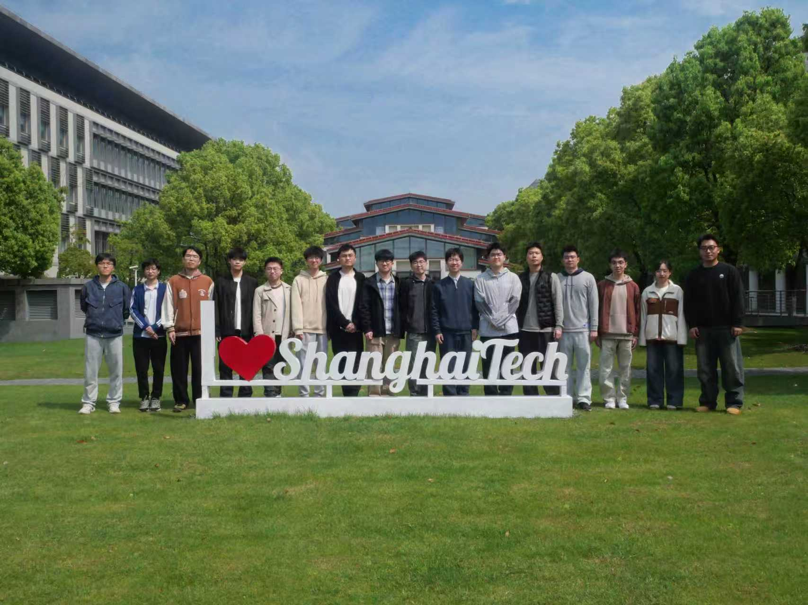
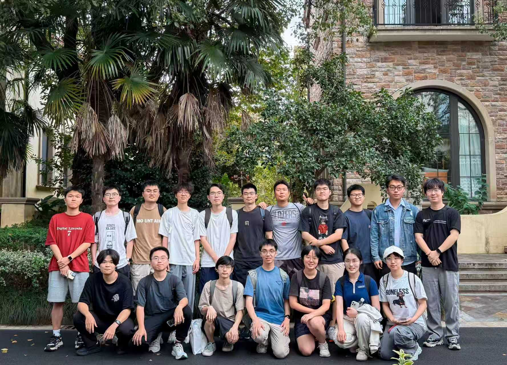

Frontier 01
Connect time series with language.
Generate, edit, and forecast time series with language and real-world context.
View sequence researchMachine Learning & Data Intelligence · ShanghaiTech University
We build multimodal foundation models that observe real signals, reason about possible futures, and remain understandable.
MLDI develops learning systems from the structure of real data outward. We model irregular signals, build adaptive foundation models, turn models into tool-using agents, and open their internal mechanisms to inspection.
These are not separate themes. They are layers of one research program: understand the data, generalize the model, ground the decision, and make the mechanism legible.
Research atlas
Multimodal models, grounded reasoning, and mechanisms we can inspect. Select a direction to explore the original research.
Frontier 01
Generate, edit, and forecast time series with language and real-world context.
View sequence researchResearch impact
Open forecasting models that people use. Reasoning whose steps can be evaluated. Internal mechanisms that can be explained and tested through intervention.
Kairos is available in three compact, open forecasting checkpoints.
Hugging Face · 3 official Kairos models · all time · 27 Sep 2026 Explore the models ↗Kairos-small uses 23M parameters versus Sundial’s 128M, with lower normalized MASE in the reported GIFT-Eval comparison.
MASE 0.748 vs 0.750 · lower is better · paper comparison Read the benchmark setting ↗CRM reaches 43.3%, compared with PURE’s 26.6%, when verifiable rewards are disabled in the reported RL experiment.
Qwen2.5-Math-7B · Pass@1 · same evaluation setting Read the reasoning experiment ↗Our agent and evaluation research received two paper awards. Together, these works ask how models solve a task—and whether the result answers the actual request.
Outstanding Paper · EACL 2024
Use experience from previous experiments to solve new machine-learning tasks.
Paper and award record ↗Best Paper · IEEE VIS 2024
Check whether a generated visualization answers the question, beyond whether the code runs.
Paper and award record ↗Selected research
Original figures and demonstrations, with the contribution and evidence alongside. Open any figure to inspect it at full size.
The people behind the research
The Machine Learning and Data Intelligence Group is part of the School of Information Science and Technology at ShanghaiTech University, led by Prof. Kan Ren.
We work across multimodal time series, foundation models, agentic reasoning, and mechanistic interpretability, connecting fundamental methods with healthcare, finance, science, and other real-world settings.


Principal investigator
Assistant Professor, Research Fellow, and PhD Supervisor at ShanghaiTech SIST. Previously Senior Researcher at Microsoft Research Asia.
Complete index
0 works shown
Open research